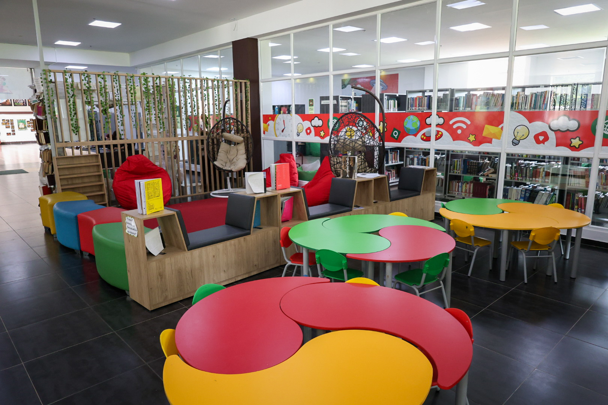
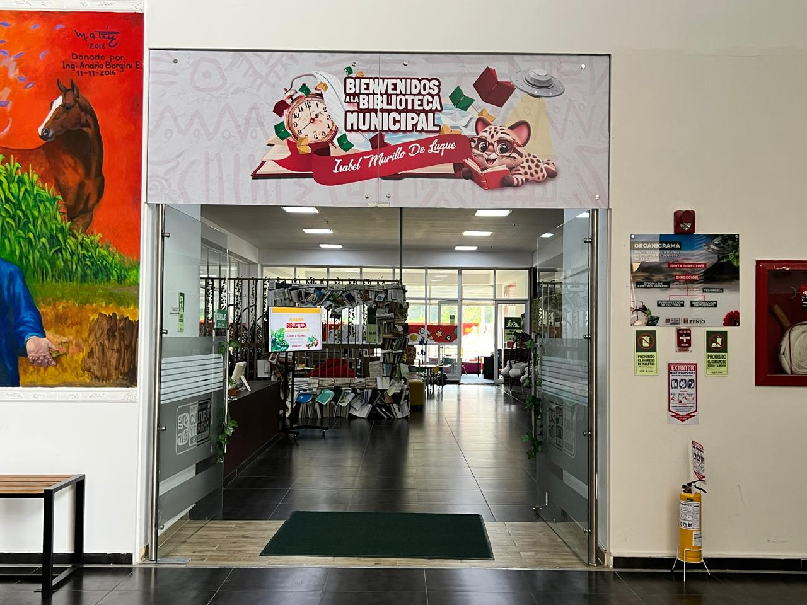

Sede principal
Biblioteca Pública Municipal Isabel Murillo de Luque
Centro Cultural Nhora Matallana Forero
Un espacio para leer, investigar, encontrarse y participar en la vida cultural del municipio.


La Biblioteca Pública Municipal Isabel Murillo de Luque ha crecido al ritmo del municipio, acompañando sus transformaciones y sosteniendo, en medio de todo, un lugar para la palabra. Lo que empezó como un espacio de consulta se ha convertido en un punto de encuentro donde la lectura dialoga con la memoria, la educación y la vida cotidiana.
Hoy, la biblioteca no se limita a sus paredes: se extiende hacia veredas, parques e instituciones, llevando libros, conversaciones y experiencias a donde hacen falta. Más que un edificio, es una red viva que conecta personas, historias y formas de aprender.
Descubre algunas de las actividades y fechas que hacen parte de nuestra agenda cultural, educativa y bibliotecaria.
Nuestra biblioteca desarrolla programas y actividades que promueven la lectura, la escritura, la oralidad y el aprendizaje. Cada propuesta busca generar experiencias significativas para públicos de todas las edades y fortalecer el encuentro entre la comunidad y la biblioteca.

Una red de espacios que acerca la lectura, la cultura y el conocimiento a distintos sectores de Tenjo, desde el centro del municipio hasta sus comunidades rurales.
Un espacio para leer, investigar, encontrarse y participar en la vida cultural del municipio.
Acerca los servicios bibliotecarios a la comunidad y facilita el acceso al conocimiento en el territorio.
Articula la lectura con la vida rural y fortalece procesos educativos y comunitarios desde la escuela.
Amplía las posibilidades de encuentro, creación y circulación de saberes para la comunidad.